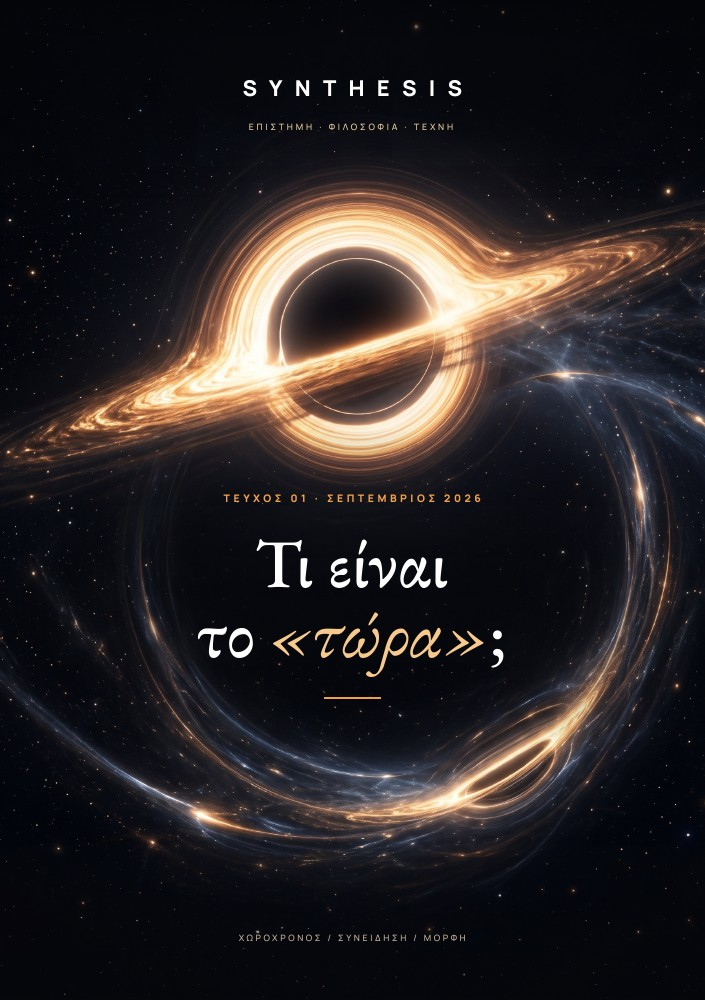

ΤΕΥΧΟΣ 03 / ΝΟΕΜΒΡΙΟΣ 2026
Τι είναι
το «εγώ»;
ΣΩΜΑ / ΜΝΗΜΗ / ΤΑΥΤΟΤΗΤΑ
Τι παραμένει ίδιο
όταν όλα αλλάζουν;

Σώμα, μνήμη και πρόθεση
Η συνέχεια μέσα στην αλλαγή
Το πρόσωπο ως ανοιχτό ερώτημα
ΣΤΙΣ ΣΕΛΙΔΕΣ ΤΟΥ ΤΕΥΧΟΥΣ 03
Έξι διαδρομές
γύρω από το «εγώ».
Από το παιδί της φωτογραφίας μέχρι το υποθετικό ψηφιακό αντίγραφο. Έξι μεγαλύτερα κείμενα και μια προσωπική διαδρομή.
ΣΩΜΑ / ΑΝΤΙΛΗΨΗ
Πού τελειώνεις εσύ και αρχίζει ο κόσμος;
≈ 7′ ΑΝΑΓΝΩΣΗ ΣΕΛ. 06
ΜΝΗΜΗ / ΠΡΟΣΩΠΙΚΗ ΙΣΤΟΡΙΑ
Είσαι όσα θυμάσαι;
≈ 7′ ΑΝΑΓΝΩΣΗ ΣΕΛ. 15
ΕΓΚΕΦΑΛΟΣ / ΠΡΟΘΕΣΗ
Ποιος αποφασίζει πριν πεις «εγώ»;
≈ 7′ ΑΝΑΓΝΩΣΗ ΣΕΛ. 24
ΑΝΑΠΤΥΞΗ / ΣΥΝΕΧΕΙΑ
Είσαι ακόμη το παιδί της φωτογραφίας;
≈ 7′ ΑΝΑΓΝΩΣΗ ΣΕΛ. 33
ΤΕΧΝΗΤΗ ΝΟΗΜΟΣΥΝΗ / ΝΟΗΤΙΚΟ ΠΕΙΡΑΜΑ
Αν ένα αντίγραφο θυμάται τη ζωή σου, είναι εσύ;
≈ 7′ ΑΝΑΓΝΩΣΗ ΣΕΛ. 42
ΤΕΧΝΗ / ΒΛΕΜΜΑ
Πόσους εαυτούς χωράει ένα πορτρέτο;
≈ 7′ ΑΝΑΓΝΩΣΗ ΣΕΛ. 51
EDITORIAL / ΤΟ ΠΑΙΔΙ ΠΟΥ ΔΕΝ ΧΑΘΗΚΕ
Εγώ τότε.
Εγώ τώρα.
Σε μια παλιά φωτογραφία, ένα παιδί κοιτάζει τον φακό. Δεν θυμάσαι τη στιγμή. Ίσως δεν αναγνωρίζεις ούτε το δωμάτιο. Αναγνωρίζεις όμως το παιδί: «Εγώ είμαι».
Στο πρώτο τεύχος αναζητήσαμε το «τώρα». Στο δεύτερο το «εδώ». Στο τρίτο στεκόμαστε μπροστά στον άνθρωπο που χρησιμοποιεί και τις δύο λέξεις. Πώς συνεχίζουμε να είμαστε εμείς, ενώ αλλάζουμε;
Διάβασε το editorialΠΑΡΑΤΗΡΗΣΕΙΣ / ΣΥΝΤΟΜΑ ΚΕΙΜΕΝΑ
Ιδέες σε μικρή τροχιά.
Μικρές στάσεις γύρω από το «εγώ».
Πάρε τον χρόνο σου.
Δεν θυμάσαι, αλλά έμαθες
Η ζωή σου άφησε ίχνη πριν μπορέσεις να την αφηγηθείς.
σελ. 60 02Το σώμα δεν αλλάζει με ένα κοινό ρολόι
Οι ρυθμοί κυτταρικής ανανέωσης διαφέρουν.
σελ. 60 03Το ίδιο δεν σημαίνει το παρόμοιο
Η ομοιότητα δεν αρκεί για να ορίσει την ταυτότητα.
σελ. 60 04Η πρόθεση έχει και παρελθόν
Μια απόφαση έχει ιστορία πριν γίνει στιγμή.
σελ. 61 05Το πρώτο πρόσωπο δεν αρκεί
Η γραμματική δεν πιστοποιεί βίωμα.
σελ. 61 06Η παλιά εικόνα δεν γνώριζε το μέλλον
Άφησε στην εικόνα και λίγο από το άγνωστό της.
σελ. 61ΤΟ ΑΡΧΕΙΟ ΤΗΣ ΕΚΔΟΣΗΣ
Κάθε τεύχος.
Η δική του διαδρομή.
Το νέο τεύχος ανοίγει την επόμενη ερώτηση. Τα προηγούμενα μένουν εδώ, ολόκληρα, με το εξώφυλλο και τις σελίδες τους.
Όλα τα τεύχη
ΤΕΥΧΟΣ 01 / ΣΕΠΤΕΜΒΡΙΟΣ 2026
Τι είναι
το «τώρα»;
Χωροχρόνος / Συνείδηση / Μορφή
Εξερεύνησε το πρώτο τεύχος